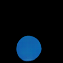

A puzzle game I made one summer based on the boid flocking simulation. I did not have any time to do art or music for it, and it was my first time using Godot, so it's a little rough around the edges. But I think it's a fun game with some interesting levels.
Instructions and source code available at https://github.com/kevindlewis23/BoidGame
Download at https://noklew.itch.io/boids-life
Computer vision course project experimenting with autoencoders and contrastive learning with PyTorch.
Source code available at https://github.com/ShashankRaghuraj/CSE-5524-Final-Project

Smoothly transitioning between different images of shapes by interpolating between their learned representations in an autoencoder.